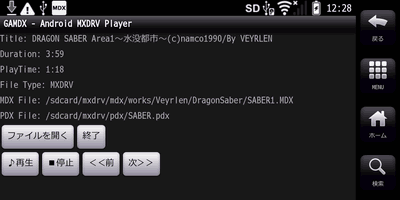

GAMDX
GAMDXをご利用いただき、ありがとうございます。本ページは、「GAMDX - Android MXDRV Player」のヘルプトップページとなります。
目次
| 特長 |
GAMDXの特長を説明します。 |
| 操作方法 |
GAMDXの操作方法を説明します。 |
| 環境設定 |
GAMDXの動作環境の設定方法を説明します。 |
| よくある質問 |
GAMDXについてよくある質問をまとめたものです。 |
| ライセンス |
GAMDXのライセンスについて説明します。 |
コメントを受け付けています。
更新履歴
- 2023.0820.1
-
- 内部の大きな変更により、GAMDX→GAMDX2にリネーム。
- 64bit対応。
- MDXエンジンとして、MXDRVgベースのPortable mdx decoderを採用。
- FM音源エンジンとして、X68Soundを使うよう変更。
- 2012.1213.1
-
- 2012.1212.1
-
- OS4.4（KitKat）でMDXファイルの読み込みができなくなるのを修正。
- 多少の最適化。
- 2012.0707.1
-
- 環境設定に「発声バッファサイズ」を追加。適宜変更することで音の途切れを解消できることがある。
- 2012.0706.1
-
- mxdrvg_core.hのコンバートバグ修正。
- 最新環境（SDK r20/NDK r8）でのビルド確認。
- Jelly Bean(Android4.1)での動作確認。
- 2011.0401.4
-
- ループ＆フェードアウトしない曲の場合、演奏後のギャップを飛ばしてしまっていたバグを修正。
- サービスが常駐していない状態でMDXファイルIntent付きの起動を行った場合、MDXファイルの読み込みが行われないバグを修正。
- 2011.0401.3
-
- [ファイルを開く]で、初期フォルダが存在していないときに異常終了するバグを修正。
- MIMEタイプ"audio/x-mxdrv"のIntent-Filterを実装し、対応アプリからのIntentでMDXファイルの演奏を開始できるようにした。
- 2011.0401.1
-